README
Hello, I'm Spencer!
I've been developing for Apple platforms since 2014, following
the introduction of the Swift programming language. After a few years of tinkering
with Swift and UIKit, I developed an app for my high school that enabled students to
discover volunteer opportunities and track their hours. I fell in love with Swift, and
my passion for it led me to teach an after-school intro to iOS development
class for my peers.
In 2019, I joined Apple as a Specialist (salesperson) for the holiday season,
working part-time while beginning my studies in Computer Science at UC San Diego.
I stayed on at Apple and, in 2021, transitioned to my current role as an Operations
Specialist. In the second half of 2022, I participated in a Career Experience as a
front-end engineer on the Home Services team. During this time, I led the development
of an iOS app built with Swift and SwiftUI for an internal study. I also authored the
initial framework for a custom content management system, collaborating with a
server-side team based in Japan.
My personal projects combine 3D printed parts, off-the-shelf components, and custom
software, reflecting my hobbies and current interests in the field. I'm intrigued by
embedded systems, operating systems, machine learning, and the intersection of
hardware and software. Occasionally, I dabble in web development. I share updates
about my personal projects on this site, and I hope to continue teaching by
publishing iOS development tutorials here in the near future.